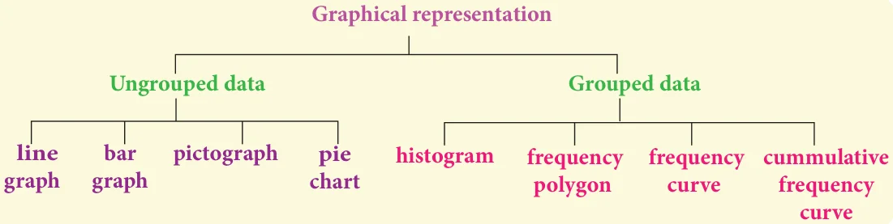
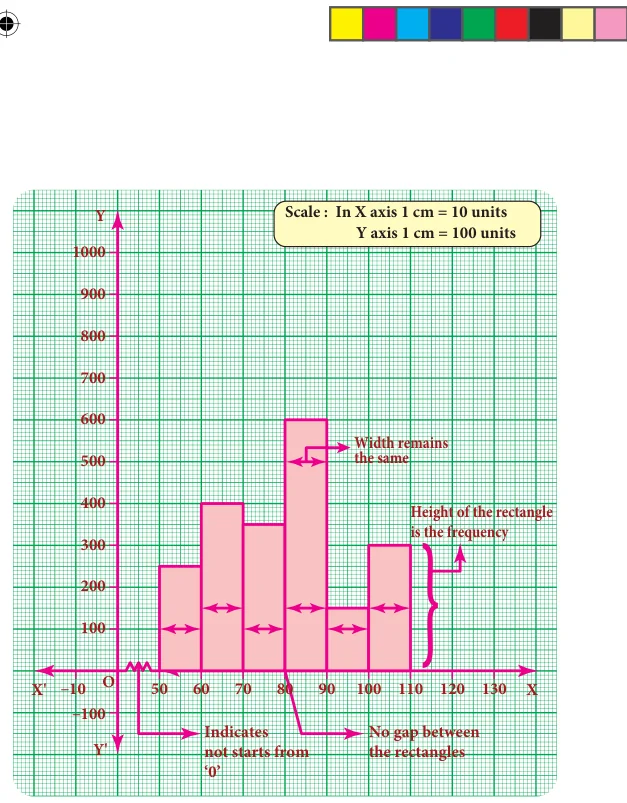
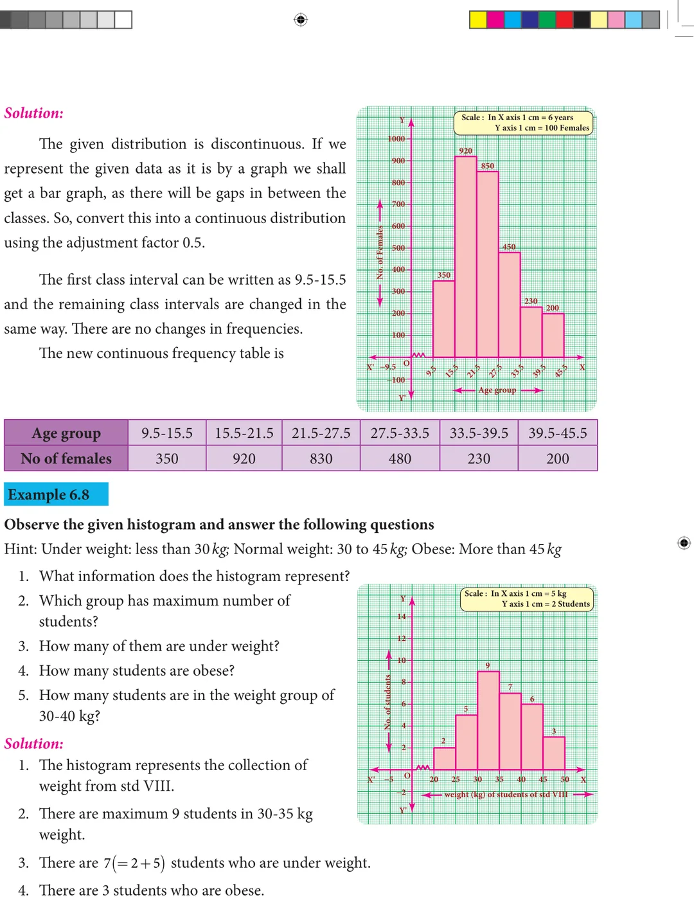
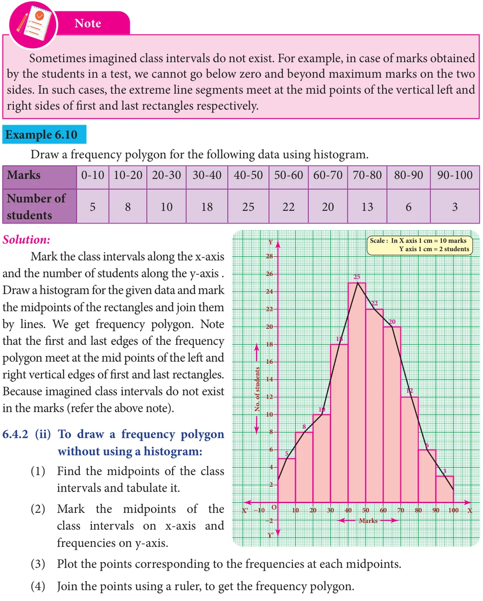
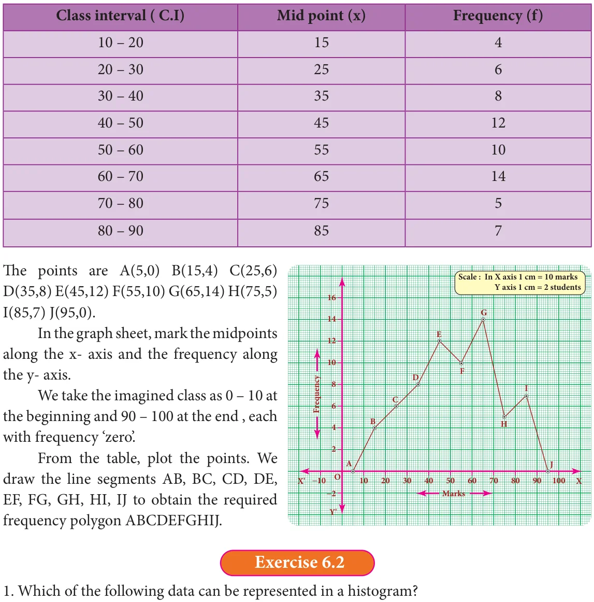

The Line graph, Bar graph, Pictograph and the Pie chart are the graphical representations of the frequency for ungrouped data. Histogram, Frequency polygon, Frequency curve, Cumulative frequency curves (Ogives) are some of the graphical representations of the frequency distribution for grouped data.
In this class, we are going to represent the grouped data frequency by Histogram and Frequency polygon only. You will learn the other type of representations in the higher classes.


6.4.1 Histogram
A histogram is a graph of a continuous frequency distribution. Histogram contains a set of rectangles, the base of which is the length of the class interval and the frequency in each class interval is its height. i.e the class intervals are represented on the horizontal axis (x- axis) and the frequencies are represented on the vertical axis (y-axis).
The area of each rectangle proportional to the frequency in the respective class interval and the total area of the histogram is proportional to the total frequency. Because of the continuous frequency distribution, the rectangles are placed continuously side by side with no gap between adjacent rectangles.
Steps to construct a Histogram:
- Represent the data in the continuous form (exclusive form) if it is in discontinuous form (inclusive form) by converting it using the adjustment factor.
- Select the appropriate units along the x-axis and y-axis.
- Plot the lower limits of all class interval on the \(x -\) axis.
- Plot the frequencies of the distribution on the \(y -\) axis.
- Construct the rectangles with class intervals as bases and corresponding frequencies
as heights. Each class has lower and upper values. This gives us two equal vertical lines representing the frequencies. The upper ends of the lines are joined together and this process will give us rectangles.

6.4.1 (i) Construction of a histogram for continuous frequency distribution: Example 6.6
Draw a histogram for the following table which represents the age groups from 100

Example 6.7
The following table gives the number of literate females in the age group 10 to 45 years in a town.

Draw a histogram to represent the above data

- There are \(16(= +\) ) students in the 30-40 kg weight group.
6.4.2 Frequency Polygon
A frequency polygon is a line graph for the graphical representation of the frequency distribution. If we mark the midpoints on the top of the rectangles in a histogram and join them by straight lines, the figure so formed is called a frequency polygon. It is called a polygon as it consists of a number of lines as the sides of a polygon. A frequency polygon is useful in comparing two or more frequency distributions. A frequency polygon for a grouped frequency distribution can be constructed in two ways.
- Using a histogram
- Without using a histogram
6.4.2 (i) To construct a frequency polygon using a histogram:
- Draw a histogram from the given data.
- Join the consecutive midpoints of the upper sides of the adjacent rectangles of the histogram by the line segments.
- It is assumed that the class interval preceding the first rectangle and the class
interval succeeding the last rectangle exists in the histogram and the frequency of each extreme class interval is zero. These class intervals are known as imagined class


Example 6.11
Draw a frequency polygon for the following data without using histogram.

Solution:
Find the midpoint of the class intervals and tabulate it.

- The number of mountain climbers in the age group 20 to 60 in TamilNadu.
- Production of cycles in different years.
- The number of students in each class of a school.
- The number votes polled from 7 am to 6 pm in an election.
- The wickets fallen from 1 over to 50th over in a one day cricket match.
- Fill in the blanks:
- The total area of the histogram is ________ to the total frequency of the given data.
- A graph that displays data that changes continuously over the periods of time is _____ .
- Histogram is a graphical representation of ___________ data.